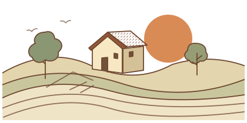

A story to keep
Take your time.
Tap the microphone when you’re ready.
Listen first. Then choose where to keep your story.
Prefer to write?
Text stays in the tab until you download it.
Your voice stays in this tab until you save or share it.
A little time for family
Small stories. Little discoveries. More time for each other.
One question can bring back a whole world.
Tell a story
Add your calendar to see upcoming moments here.
Give someone a simple place to start.
Choose what opens. They can keep it or try it once.
They open the link and choose “Keep this activity”.
A returned code confirms their choice. Entries stay in this browser.
Write a five-minute activity, or copy the brief into an adult’s AI account to draft it. Use a topic such as birds or music. Leave names and family records out.
Use a topic such as birds or music. Leave names and family details out.
ADULT REVIEW
Approve only activities you would do together. The card file contains exactly the text above.
Your calendar owns the visit. After reviewing a recording, download it or use your phone’s share sheet to choose a destination. A shared Drive folder works when its access list fits the storyteller’s wishes. Notion can hold the family’s weekly plan.
These links open your apps. No account is connected here.
A little something for you
A simple activity, ready whenever you are.
“Keep” opens this activity next time on this browser.
A story to keep
Tap the microphone when you’re ready.
Listen first. Then choose where to keep your story.
Text stays in the tab until you download it.
Your voice stays in this tab until you save or share it.
Discover together · 5 min